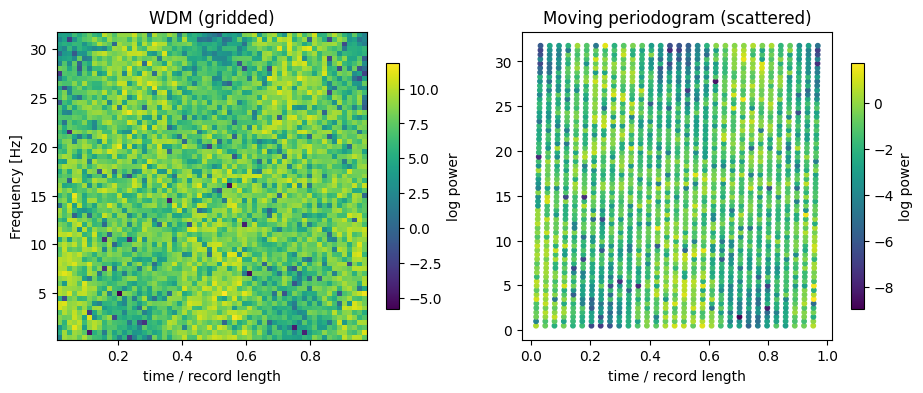
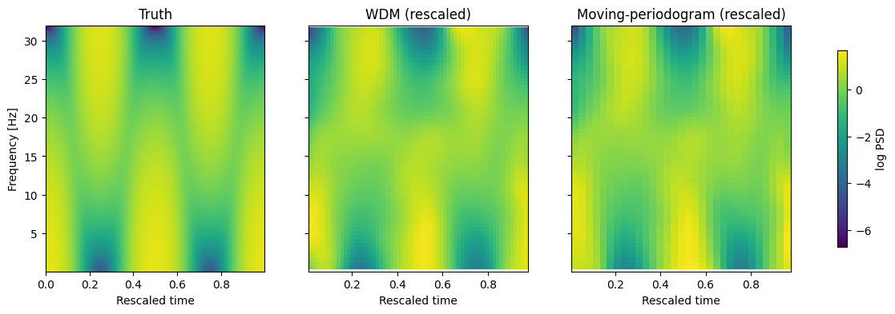
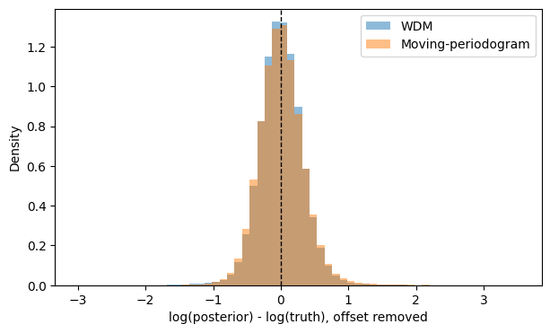
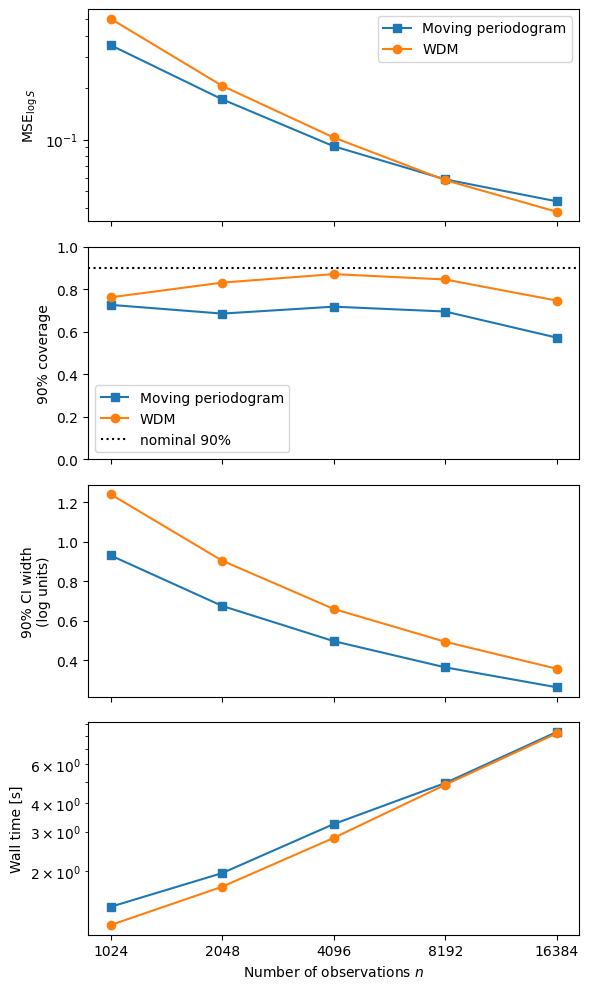

Time-varying PSD estimation#
A stationary PSD assumes that the spectral density is constant throughout the observation. For a non-stationary process, we instead model a spectrum that varies with both time and frequency,
log_psplines models this surface using a two-dimensional log-P-spline.
The time-frequency observations can be constructed using either a WDM transform or a moving periodogram. These have different sampling geometries, but both are described by the same underlying spectral model.
The model#
Let \(w_i\) denote a time-frequency coefficient observed at coordinate
Locally, the coefficient is treated as a zero-mean random variable whose variance is determined by the spectrum,
so that
provides a noisy estimate of the local spectral power.
The aim is therefore to infer the smooth surface \(S(t,f)\) from these noisy time-frequency observations.
Tensor-product log-P-spline#
We model the log spectrum rather than the spectrum directly,
which guarantees
Let
and
be B-spline bases along time and frequency.
The log-PSD surface is
where
contains the spline coefficients.
Equivalently,
This is simply the two-dimensional extension of the stationary model. In the stationary case,
whereas the time-varying model replaces the coefficient vector with a coefficient matrix and adds a spline basis in time.
Smoothness prior#
The tensor-product spline is regularised separately along the time and frequency directions.
Let
and
denote the roughness-penalty matrices for the time and frequency B-spline bases. The spline coefficients are assigned the Gaussian prior
with precision
where \(\otimes\) denotes the Kronecker product.
The two smoothing parameters have distinct roles:
\(\phi_t\) controls smoothness through time.
\(\phi_f\) controls smoothness across frequency.
Large \(\phi_t\) strongly penalises rapid temporal variation, while large \(\phi_f\) favours a smoother spectrum as a function of frequency.

The block structure of the precision matrix comes directly from the two terms in the Kronecker sum. One penalises changes along time, while the other penalises changes along frequency.
The smoothing precisions are inferred jointly with the spline coefficients, allowing the amount of smoothing in each direction to be learned from the data.
Time-frequency observations#
The model only requires observations with associated time and frequency coordinates. The transform determines where those observations occur.
For WDM, coefficients lie on a regular grid,
so the complete log-PSD surface can be evaluated efficiently as
where
For the moving periodogram, the observations instead occur at scattered coordinates
and the same model is evaluated point-by-point,
The spline model is therefore unchanged. Only the geometry of the time-frequency observations differs.
Example code#
As an example, consider the non-stationary MA(1) process
with
Because the MA coefficient varies with time, its spectrum also evolves with time. In the next cells, we generate data from this, and analyse it with the WDM and Moving-periodogram likelihoods.
! pip install -q --upgrade "LogPSplinePSD" "multimethod>=1.12,<2"
Imports and data generation#
import os
os.environ.setdefault("XLA_FLAGS", "--xla_force_host_platform_device_count=1")
import jax
import matplotlib.pyplot as plt
import numpy as np
jax.config.update("jax_enable_x64", True)
from log_psplines import (
LogPSpline,
PowerSplineConfig,
SplineBasis,
TimeSeries,
fit,
moving_periodogram,
scattered_moving_periodogram,
)
from log_psplines.example_datasets.ls2_data import LS2Data
from log_psplines.preprocessing.wdm import wdm_periodogram
## Simualte LS2 data
ls2_data = LS2Data(n_samples=512 * 8, fs=64.0, seed=42)
ls2_data.plot(fname="ls2_data_analysis.png")
Data seen by each likelihood#
Both transforms turn the same series into squared coefficients that feed the spline fit directly – they are not smoothed or converted to a PSD themselves. WDM fills every retained time/frequency cell; the moving periodogram visits one frequency rung per window in a zig-zag path, so its raw ordinates are scattered rather than gridded.

Original signal length: \(N = 4096\)
Window length: \(N_{\text{win}} = 128\)
(Note: For the Moving Periodogram, time and frequency values are paired coordinate arrays of length 3,968 rather than a full 2D grid matrix).
Method |
Time Bins / Points |
Frequency Bins / Points |
Power Shape |
Likelihood Points |
|---|---|---|---|---|
WDM |
62 |
63 |
|
3906 |
Moving Periodogram (thin=1) |
3968 |
3968 |
|
3968 |
Moving Periodogram (thin=2) |
1984 |
1984 |
|
1984 |
series = TimeSeries(data=ls2_data.data[:, 0], t=ls2_data.time)
# nt must divide n_samples with nt and n_samples/nt both even. WDM's frequency
# count is fixed at n_samples/nt, so nt=n_samples//64 keeps a block length of
# 64 samples (and hence ~64 frequency bins) regardless of n_samples -- this is
# the setting empirically found to give WDM/moving-periodogram RMSE and 90%
# coverage in the same ballpark (see the simulation study at the end).
wdm_data = wdm_periodogram(series, nt=ls2_data.n_samples // 64)
# m sets both the moving-periodogram's frequency count and window width; m=64
# matches WDM's fixed ~64 frequency bins above, and thin=2 keeps enough
# time blocks to resolve the process's time variation.
mp_data = moving_periodogram(ls2_data.data[:, 0], dt=1.0 / ls2_data.fs, m=64, thin=2)
mp_scatter = scattered_moving_periodogram(ls2_data.data[:, 0], dt=1.0 / ls2_data.fs, m=64, thin=2)
fig, axes = plt.subplots(1, 2, figsize=(11, 4))
mesh = axes[0].pcolormesh(
wdm_data.time, wdm_data.frequency, np.log(wdm_data.power).T, shading="auto"
)
axes[0].set(title="WDM (gridded)", xlabel="time / record length", ylabel="Frequency [Hz]")
fig.colorbar(mesh, ax=axes[0], label="log power", shrink=0.8)
sc = axes[1].scatter(
mp_scatter.time, mp_scatter.frequency, c=np.log(mp_scatter.power), s=10
)
axes[1].set(title="Moving periodogram (scattered)", xlabel="time / record length")
fig.colorbar(sc, ax=axes[1], label="log power", shrink=0.8)
plt.show()
# Compare the number of likelihood data points ("pixels") used by each method
n_wdm = np.asarray(wdm_data.power).size
n_mp = np.asarray(mp_scatter.power).size
print("WDM")
print(f" time bins : {len(wdm_data.time)}")
print(f" frequency bins : {len(wdm_data.frequency)}")
print(f" power shape : {np.shape(wdm_data.power)}")
print(f" likelihood pts : {n_wdm}")
print("\nMoving periodogram")
print(f" scattered times : {len(mp_scatter.time)}")
print(f" scattered freqs : {len(mp_scatter.frequency)}")
print(f" power shape : {np.shape(mp_scatter.power)}")
print(f" likelihood pts : {n_mp}")
print("\nComparison")
print(f" MP / WDM likelihood-point ratio : {n_mp / n_wdm:.3f}")
print(f" WDM / MP likelihood-point ratio : {n_wdm / n_mp:.3f}")
# Sanity checks
assert n_wdm == len(wdm_data.time) * len(wdm_data.frequency)
assert n_mp == len(mp_scatter.time) == len(mp_scatter.frequency)
print(
f"\nn={ls2_data.n_samples} | "
f"WDM={n_wdm} | "
f"MP={n_mp} | "
f"MP/WDM={n_mp / n_wdm:.3f}"
)
Run analysis with the two likelihoods#
# Configs
N_freq_K = 8
N_time_K = 8
configs = PowerSplineConfig(n_warmup=250, n_samples=300, seed=1)
# WDM fit
wdm_freqs = wdm_data.frequency / wdm_data.frequency[-1]
wdm_freq_basis = SplineBasis.from_grid(wdm_freqs, N_freq_K)
wdm_time_basis = SplineBasis.from_grid(wdm_data.time, N_time_K)
wdm_model = LogPSpline(
frequency=wdm_freq_basis,
time=wdm_time_basis,
)
wdm_result = fit(wdm_data, configs,model=wdm_model)
# Moving-periodogram (mp) fit
mp_freqs = mp_data.frequency / mp_data.frequency[-1]
mp_freq_basis = SplineBasis.from_grid(mp_freqs, N_freq_K)
mp_time_basis = SplineBasis.from_grid(mp_data.time, N_time_K)
mp_model = LogPSpline(
frequency=mp_freq_basis,
time=mp_time_basis,
)
mp_result = fit(mp_data,configs,model=mp_model)
Compare outputs#
WDM/moving-periodogram posteriors are in each transform’s own coefficient-variance units, only proportional (not equal) to the analytic PSD. Fit that constant per method (the median log-ratio to the truth) before plotting or computing residuals – otherwise every plot and residual below would be dominated by an arbitrary units offset instead of genuine shape error.


Metric / Parameter |
WDM Posterior |
Moving Periodogram (MP) Posterior |
|---|---|---|
Grid Dimensions (Time × Freq) |
\(62 \times 63\) |
\(31 \times 64\) |
Posterior Samples per Cell |
300 (1 chain × 300 draws) |
300 (1 chain × 300 draws) |
Residual Std Dev (post-rescale) |
0.319 |
0.333 |
90% CI Coverage (post-rescale) |
86.1% |
84.0% |
true_wdm = ls2_data.get_true_psd(time_grid=wdm_result.time, freq_grid=wdm_data.frequency)
true_mp = ls2_data.get_true_psd(time_grid=mp_result.time, freq_grid=mp_data.frequency)
wdm_median = np.median(wdm_result.psd, axis=(0, 1))
mp_median = np.median(mp_result.psd, axis=(0, 1))
# log-ratio residuals: log(posterior draw) - log(truth), flattened over chain/draw/time/freq
wdm_resid = (np.log(wdm_result.psd) - np.log(true_wdm)[None, None]).ravel()
mp_resid = (np.log(mp_result.psd) - np.log(true_mp)[None, None]).ravel()
# The constant depends on each transform's own normalization convention;
# estimate it as the median log-residual, then judge shape error from the
# *spread* of the residuals left after removing it.
wdm_offset = np.median(wdm_resid)
mp_offset = np.median(mp_resid)
n_chains, n_draws, n_time, n_freq = wdm_result.psd.shape
print(f"WDM posterior: {n_chains} chain(s) x {n_draws} draws, grid {n_time}(time) x {n_freq}(freq) "
f"-> {n_chains * n_draws} posterior samples per grid cell")
n_chains_mp, n_draws_mp, n_time_mp, n_freq_mp = mp_result.psd.shape
print(f"MP posterior: {n_chains_mp} chain(s) x {n_draws_mp} draws, grid {n_time_mp}(time) x {n_freq_mp}(freq) "
f"-> {n_chains_mp * n_draws_mp} posterior samples per grid cell")
print(f"\nWDM median log-offset: {wdm_offset:.3f} (scale factor {np.exp(wdm_offset):.1f}, "
f"c.f. n_samples={ls2_data.n_samples})")
print(f"MP median log-offset: {mp_offset:.3f} (scale factor {np.exp(mp_offset):.3f}, "
f"c.f. 1/(2*pi)={1 / (2 * np.pi):.3f})")
print(f"WDM residual std after removing the constant offset: {(wdm_resid - wdm_offset).std():.3f}")
print(f"MP residual std after removing the constant offset: {(mp_resid - mp_offset).std():.3f}")
def _ci_coverage(psd_draws: np.ndarray, true_psd: np.ndarray, log_offset: float) -> float:
"""Fraction of (time, freq) cells where truth falls in the 90% posterior CI."""
scaled = psd_draws / np.exp(log_offset)
lower = np.quantile(scaled, 0.05, axis=(0, 1))
upper = np.quantile(scaled, 0.95, axis=(0, 1))
return float(np.mean((true_psd >= lower) & (true_psd <= upper)))
wdm_coverage = _ci_coverage(wdm_result.psd, true_wdm, wdm_offset)
mp_coverage = _ci_coverage(mp_result.psd, true_mp, mp_offset)
print(f"\nWDM 90% CI coverage (after constant rescale): {wdm_coverage:.1%}")
print(f"MP 90% CI coverage (after constant rescale): {mp_coverage:.1%}")
# WDM/MP rescaled by their fitted constant offset so all three panels share
# one color scale -- this is the only PSD comparison worth plotting.
fig, axes = plt.subplots(1, 3, figsize=(15, 4), sharey=True)
rescaled_panels = [
("Truth", ls2_data.rescaled_time, ls2_data.freq, ls2_data.get_true_psd()),
("WDM (rescaled)", wdm_result.time, wdm_data.frequency, wdm_median / np.exp(wdm_offset)),
("Moving-periodogram (rescaled)", mp_result.time, mp_data.frequency, mp_median / np.exp(mp_offset)),
]
vmin = np.log(min(p[3].min() for p in rescaled_panels))
vmax = np.log(max(p[3].max() for p in rescaled_panels))
for ax, (title, t, f, psd) in zip(axes, rescaled_panels):
mesh = ax.pcolormesh(t, f, np.log(psd).T, shading="auto", vmin=vmin, vmax=vmax)
ax.set(title=title, xlabel="Rescaled time")
axes[0].set_ylabel("Frequency [Hz]")
fig.colorbar(mesh, ax=axes, label="log PSD", shrink=0.8)
plt.show()
# Same log-ratio residuals as above, but with each method's constant units
# offset removed -- this isolates genuine shape error, centered near zero.
fig, ax = plt.subplots(figsize=(7, 4))
wdm_resid_scaled = wdm_resid - wdm_offset
mp_resid_scaled = mp_resid - mp_offset
bins = np.linspace(
min(wdm_resid_scaled.min(), mp_resid_scaled.min()),
max(wdm_resid_scaled.max(), mp_resid_scaled.max()),
60,
)
ax.hist(wdm_resid_scaled, bins=bins, alpha=0.5, label="WDM", density=True)
ax.hist(mp_resid_scaled, bins=bins, alpha=0.5, label="Moving-periodogram", density=True)
ax.axvline(0.0, color="k", linestyle="--", linewidth=1)
ax.set(xlabel="log(posterior) - log(truth), offset removed", ylabel="Density")
ax.legend()
plt.show()
Simulation study: scaling with \(n\)#
Repeat the WDM and moving-periodogram fits over a range of series lengths
n, using the same resolution-matching rule as above (WDM block length
fixed at 64 samples via nt = n // 64; moving periodogram m=64, thin=1).
For each n we record:
MSE of the log posterior-median PSD vs. the log analytic truth (after removing each method’s constant units offset),
90% credible-interval coverage,
90% CI width (in log units),
wall time for the fit.
Note – we can get speedups if we use more thinning/coarse-graining.

import time
def _summarize_fit(result, true_psd, wall_time):
"""MSE/coverage/CI-width for a fit, after removing the constant units offset."""
resid = (np.log(result.psd) - np.log(true_psd)[None, None]).ravel()
offset = np.median(resid)
mse = float(np.mean((resid - offset) ** 2))
scaled = result.psd / np.exp(offset)
lower = np.quantile(scaled, 0.05, axis=(0, 1))
upper = np.quantile(scaled, 0.95, axis=(0, 1))
coverage = float(np.mean((true_psd >= lower) & (true_psd <= upper)))
ci_width = float(np.mean(np.log(upper) - np.log(lower)))
return {"mse": mse, "coverage": coverage, "ci_width": ci_width, "wall_time": wall_time}
def analyze_wdm(n_samples: int, *, seed: int, n_warmup: int, n_mcmc_samples: int) -> dict:
data = LS2Data(n_samples=n_samples, fs=64.0, seed=seed)
series = TimeSeries(data=data.data[:, 0], t=data.time)
wdm = wdm_periodogram(series, nt=n_samples // 64)
model = LogPSpline(
frequency=SplineBasis.from_grid(wdm.frequency / wdm.frequency[-1], 8),
time=SplineBasis.from_grid(wdm.time, 8),
)
t0 = time.perf_counter()
result = fit(
wdm, PowerSplineConfig(n_warmup=n_warmup, n_samples=n_mcmc_samples, seed=seed), model=model
)
wall_time = time.perf_counter() - t0
true_psd = data.get_true_psd(time_grid=result.time, freq_grid=wdm.frequency)
return _summarize_fit(result, true_psd, wall_time)
def analyze_mp(n_samples: int, *, seed: int, n_warmup: int, n_mcmc_samples: int) -> dict:
data = LS2Data(n_samples=n_samples, fs=64.0, seed=seed)
mp = moving_periodogram(data.data[:, 0], dt=1.0 / data.fs, m=64, thin=1)
model = LogPSpline(
frequency=SplineBasis.from_grid(mp.frequency / mp.frequency[-1], 8),
time=SplineBasis.from_grid(mp.time, 8),
)
t0 = time.perf_counter()
result = fit(
mp, PowerSplineConfig(n_warmup=n_warmup, n_samples=n_mcmc_samples, seed=seed + 1), model=model
)
wall_time = time.perf_counter() - t0
true_psd = data.get_true_psd(time_grid=result.time, freq_grid=mp.frequency)
return _summarize_fit(result, true_psd, wall_time)
n_values = [1024, 2048, 4096, 8192, 16384]
sweep_records = []
for n in n_values:
for method, analyze in (("WDM", analyze_wdm), ("Moving periodogram", analyze_mp)):
stats = analyze(n, seed=42, n_warmup=250, n_mcmc_samples=300)
stats.update(n=n, method=method)
sweep_records.append(stats)
print(
f"{method:20s} n={n:6d} MSE={stats['mse']:.3f} "
f"coverage={stats['coverage']:.2f} CI width={stats['ci_width']:.2f} "
f"wall={stats['wall_time']:.1f}s"
)
import pandas as pd
sweep_df = pd.DataFrame(sweep_records)
fig, axes = plt.subplots(4, 1, figsize=(6, 10), sharex=True)
markers = {"WDM": "o", "Moving periodogram": "s"}
for method, group in sweep_df.groupby("method"):
group = group.sort_values("n")
kwargs = dict(marker=markers[method], label=method)
axes[0].plot(group.n, group.mse, **kwargs)
axes[1].plot(group.n, group.coverage, **kwargs)
axes[2].plot(group.n, group.ci_width, **kwargs)
axes[3].plot(group.n, group.wall_time, **kwargs)
axes[0].set_yscale("log")
axes[0].set_ylabel(r"MSE$_{\log S}$")
axes[0].legend()
axes[1].axhline(0.9, color="k", linestyle=":", label="nominal 90%")
axes[1].set_ylabel("90% coverage")
axes[1].set_ylim(0, 1)
axes[1].legend()
axes[2].set_ylabel("90% CI width\n(log units)")
axes[3].set_yscale("log")
axes[3].set_ylabel("Wall time [s]")
axes[3].set_xlabel("Number of observations $n$")
axes[3].set_xscale("log", base=2)
axes[3].set_xticks(n_values)
axes[3].set_xticklabels(n_values)
fig.tight_layout()
plt.show()
Moving periodogram versus WDM#
The moving periodogram and WDM provide two different time-frequency representations that can be used by the time-varying log-P-spline model.
The main difference is their observation geometry:
WDM produces coefficients on a regular time-frequency grid.
The moving periodogram produces scattered observations that cycle through frequency bins as the window moves through time.

Observation geometry#
For WDM, the observations lie on a rectangular grid. This makes it natural to evaluate the tensor-product spline surface as
For the moving periodogram, each observation instead has its own time and frequency coordinate. For a half-window width \(m\), the available frequencies are
and successive window centres cycle through these frequencies. This produces the characteristic zig-zag pattern shown above.
The raw representation can be obtained with
from log_psplines.preprocessing.moving_periodogram import (
tang_moving_periodogram,
)
raw = tang_moving_periodogram(x, m=8, thin=2)
# raw["u"], raw["omega"], raw["coeff"], raw["mi"]
where u and omega are the time and angular-frequency coordinates of each ordinate and mi = abs(coeff)**2 is its power.
For the standard fitting interface, the scattered observations can instead be pooled onto a rectangular grid:
from log_psplines import moving_periodogram
data = moving_periodogram(
x, dt=dt, m=8, thin=2, time_bin=1, freq_bin=1
)
Thinning#
Nearby moving-periodogram windows overlap strongly and therefore contain correlated information. The thin parameter reduces this dependence by retaining fewer window blocks.

Increasing thin does not change the frequency cycle within a retained block. It simply increases the spacing between retained blocks, reducing the number of observations passed to the likelihood.
Time-frequency resolution#
Both transforms trade time resolution against frequency resolution.
For the moving periodogram, the window length is 2*m + 1 samples. Increasing m gives more frequency bins and therefore finer frequency resolution, but each window spans more of the time series.
For WDM, the corresponding control is nt. Decreasing nt produces wider time blocks and more frequency bins.

In both cases, wider windows or blocks provide finer frequency resolution at the cost of poorer time localisation. Narrower windows provide better time localisation but coarser frequency resolution.
The appropriate resolution therefore depends on the timescale over which the spectrum is expected to evolve.